Leaderboard
The overall comparative performance of the integrated GRN inference methods is summarized below. Only metrics that pass the applicability criteria for a given dataset are used to rank the methods.
The table below shows which metrics are applicable per dataset (✓ = applicable by metric requirements; ★ = also passes quality criteria).
{kind=link}
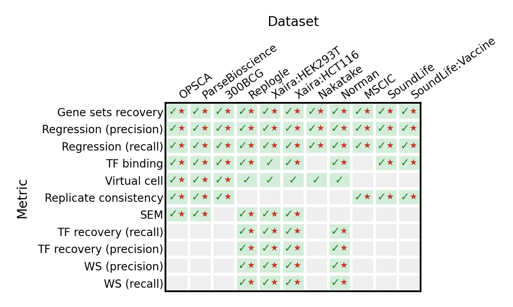
Overall score normalization
The overall leaderboard score is computed in three steps:
Per-dataset min-max normalization — for each metric within each dataset, raw scores are clipped to zero for negative values and scaled to [0, 1] across methods.
Percentile ranking — methods are ranked by percentile across all applicable (dataset, metric) pairs (1 = best).
Modality-balanced aggregation — the final overall score is the mean of per-modality median percentile ranks (transcriptomics and multiomics datasets contribute equally, regardless of how many datasets exist in each modality). Methods that are not applicable to a modality are excluded from that modality’s rank.
This ensures that a method with strong transcriptomics performance is not penalized simply because there are more transcriptomics datasets than multiomics ones.
Summary
{kind=link}
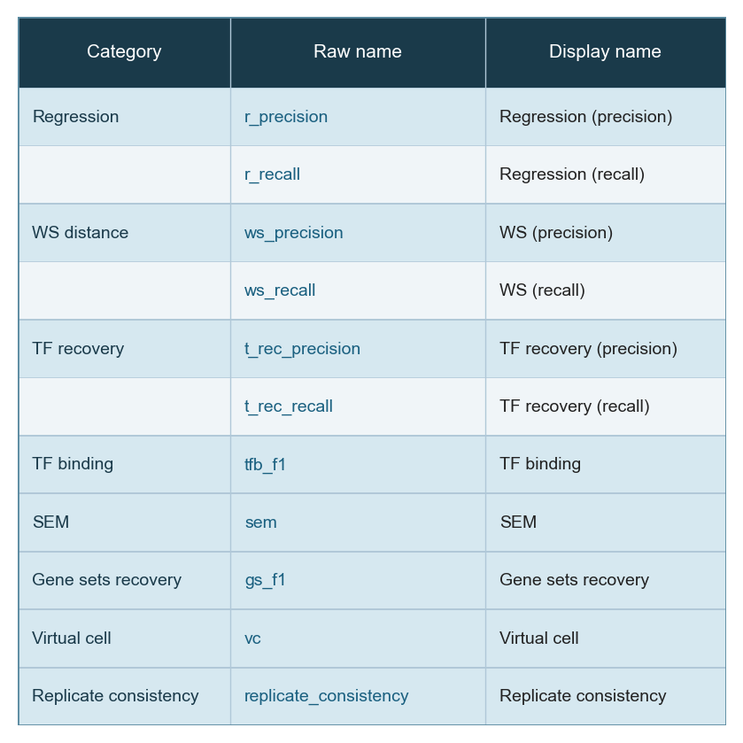
{kind=link}
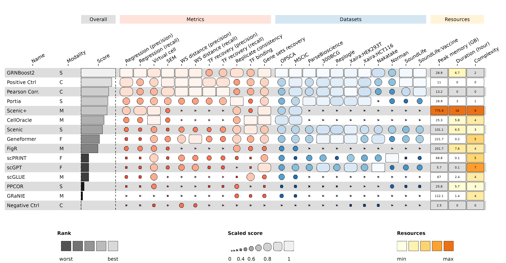
Raw scores per dataset
The heatmaps below show raw (unnormalized) metric scores for each dataset. Rows are GRN inference methods; columns are individual sub-metrics. Color represents the raw score value — higher is better for all metrics. Grey cells indicate that a metric is not applicable to that dataset or that the method did not produce a valid result.
Note that sub-metric names in these heatmaps differ from the display names used in the leaderboard. See surrogate_names in src/utils/config.py for the mapping.
Multiomics datasets
OPSCA (PBMC, drug perturbations — scRNA + scATAC)
{kind=link}
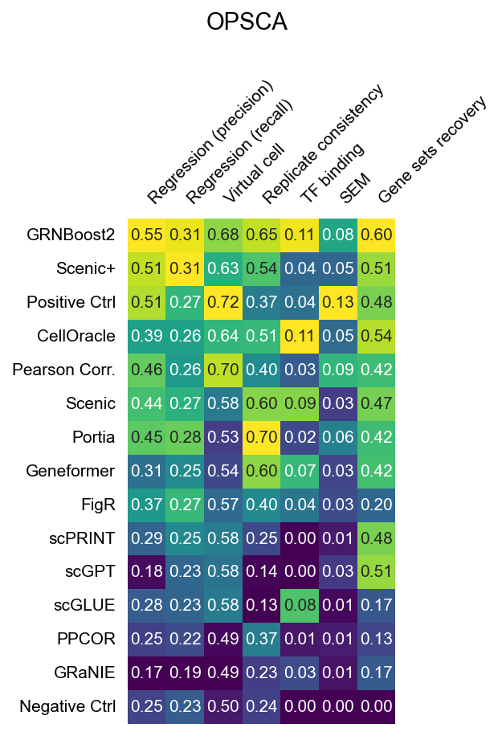
MSCIC (BMMC, observational — snRNA + snATAC, 10x Multiome)

Transcriptomics datasets
Nakatake (PSC, TF overexpression)
{kind=link}
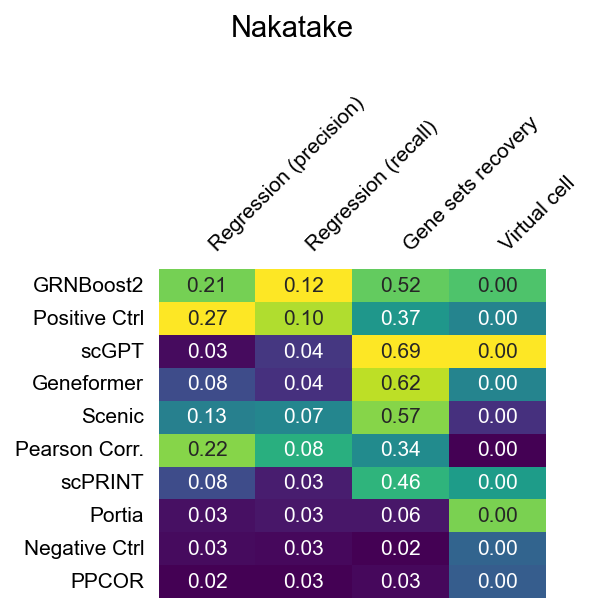
Norman (K562, CRISPRa activation)
{kind=link}
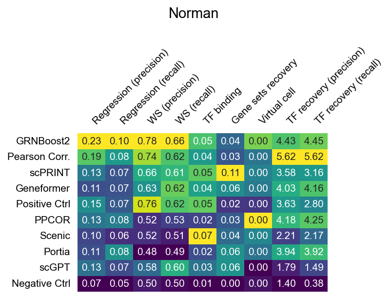
Replogle (K562, CRISPRi knockout)
{kind=link}
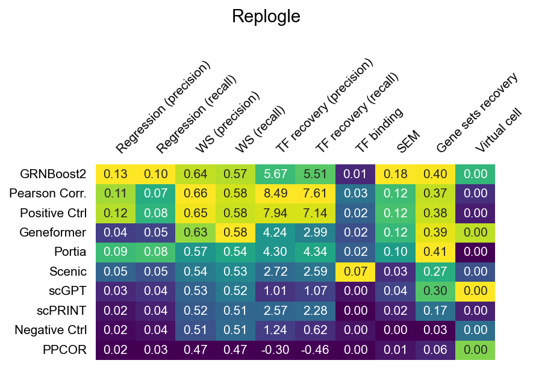
300BCG (PBMC, chemical perturbations)
{kind=link}
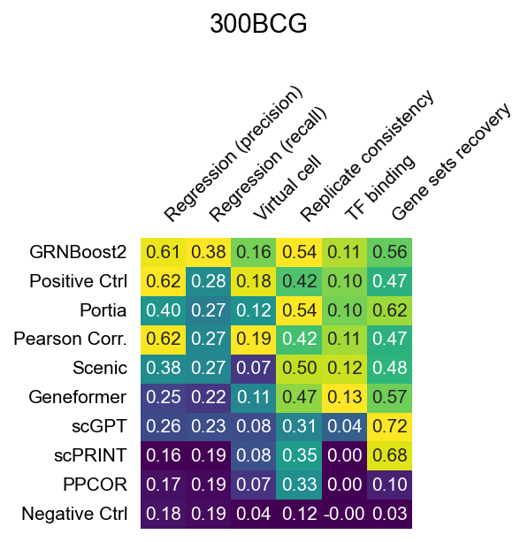
ParseBioscience (PBMC, cytokine stimulation)
{kind=link}
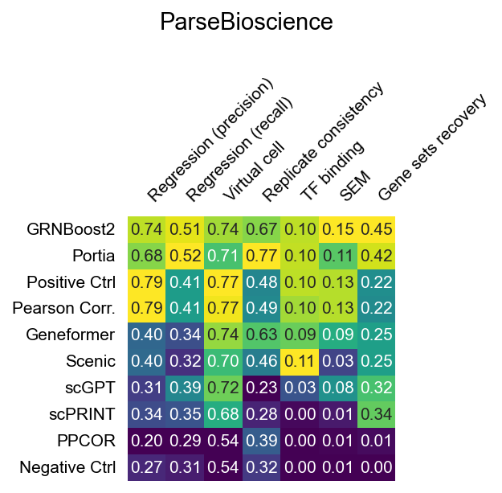
Xaira HEK293T (HEK293T, CRISPRi knockout)
{kind=link}
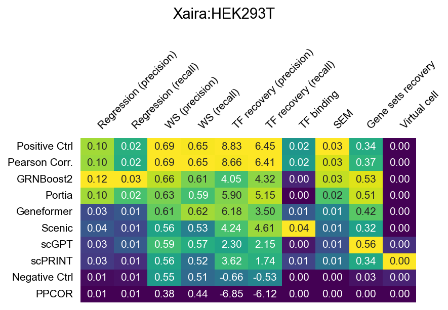
Xaira HCT116 (HCT116, CRISPRi knockout)
{kind=link}
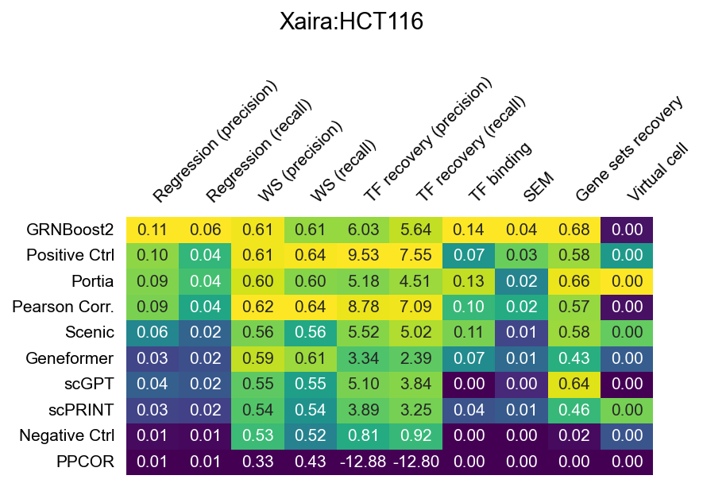
SoundLife (CD4 T cells, longitudinal observational)

SoundLife: Vaccine (B cells, flu vaccination)